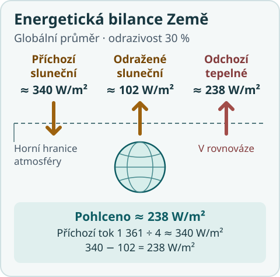
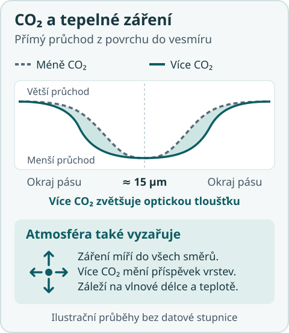

Co se stane po zdvojnásobení CO₂?
Skleníkové plyny umožňují atmosféře tepelné záření pohlcovat i vyzařovat. Díky tomu může atmosféra zářením energii získávat i ztrácet. Když přidáme CO₂, změníme průhlednost atmosféry v části infračerveného spektra. Tím se změní, kolik energie Země vyzařuje do vesmíru.
Začněme tím, kolik energie Země dostává
Na plochu kolmou ke slunečním paprskům ve vzdálenosti Země od Slunce dopadá přibližně 1 361 W/m². Země zachytává světlo kruhovým průřezem o ploše πR2. Když zachycený příkon rozpočítáme na celý povrch koule, tedy na 4πR2, dostaneme v průměru přibližně 340 W/m². Při odrazivosti kolem 30 % Země pohltí zhruba 238 W/m².

Horní hranici atmosféry budeme značit TOA (z anglického top of atmosphere). Tady můžeme sečíst, co Země s atmosférou dostává a co odevzdává. Pohlcené sluneční záření označíme ASR a odcházející dlouhovlnné záření OLR. Když je čistý tok N kladný, Země energii získává. V rovnováze je N v dlouhodobém průměru nula.
N = ASR − OLR
Jakou teplotu by muselo mít černé těleso, aby vyzařovalo 238 W/m²? Vyjde přibližně 255 K. To je efektivní vyzařovací teplota, která shrnuje vyzařování celé Země do jediného čísla. Pokud bychom v myšlenkovém příkladu vypnuli i odraz, vyšlo by asi 278 K. Pro dokonale průhlednou atmosféru, která si s povrchem nevyměňuje teplo, bilance určuje vyzařování povrchu. Teplotní profil takového plynu zůstává neurčený.
Kopp a Lean (2011) · měření slunečního ozáření
Loeb a kol. (2018) · družicová bilance CERES
Co změní víc CO₂?
Povrch vyzařuje tepelné záření. Vrstvy atmosféry část záření pohltí a samy také vyzařují, směrem k povrchu i do vesmíru. Vrstva se může radiačně ohřívat nebo ochlazovat podle toho, zda v součtu víc záření pohltí, nebo vyzáří. Účinek CO₂ na dlouhovlnný tok proto závisí i na teplotách jednotlivých vrstev.
Molekuly CO₂ pohlcují a vyzařují zvlášť účinně kolem vlnové délky 15 μm. Více CO₂ zvětší optickou tloušťku v tomto pásu. Střed pásu je už velmi neprůhledný, takže velká část dodatečného účinku se projeví na jeho okrajích. Změní se i to, z jakých výšek a teplot záření při různých vlnových délkách dosáhne vesmíru.

Více CO₂ → větší optická tloušťka v části infračerveného spektra → změna dlouhovlnného toku na TOA → radiační působení.
Myšlenkově můžeme udělat dva výpočty. Nejdřív změníme koncentraci CO₂ a necháme stav atmosféry i povrchu pevný. Rozdíl čistých toků na TOA je okamžité radiační působení (IRF). Účinek CO₂ je převážně dlouhovlnný, ale CO₂ pohlcuje i část slunečního záření v blízké infračervené oblasti. Pak necháme teplotu stratosféry přizpůsobit při pevném stavu troposféry a povrchu. Tím dostaneme radiační působení po přizpůsobení stratosféry (SARF).
Pro jednoduchý výpočet použijeme klasickou aproximaci Myhreho a kol. Autoři proložili logaritmický vztah výsledky podrobných výpočtů přenosu záření. U tropopauzy po přizpůsobení stratosféry vychází pro zdvojnásobení přibližně +3,7 W/m². Je to kladný příspěvek do energetické bilance Země.
F ≈ 5,35 × ln(C/C0) W/m²
Při C = 2C0: F ≈ 5,35 × ln(2) W/m² ≈ 3,71 W/m²
Czarnecki a kol. (2025) · optická tloušťka a okamžité působení
Myhre a kol. (1998), tabulka 3 · logaritmická aproximace
Etminan a kol. (2016) · dlouhovlnná a krátkovlnná složka
Planckova odezva ve zjednodušeném modelu
Co může kladnou nerovnováhu vyrovnat? Teplejší těleso vyzařuje víc energie. Pro černé těleso platí Stefanův–Boltzmannův zákon. Když jej zderivujeme při 255 K, dostaneme změnu vyzařování na jeden kelvin.
Vyzařovaný tok = σT4
Sklon při 255 K: 4σT3 ≈ 3,76 W·m⁻²·K⁻¹
V tomto středoškolském příkladu vyrovná 3,7 W/m² zvýšení efektivní vyzařovací teploty přibližně o 1 K. Skutečná Země vyzařuje z různých výšek a teplot. Pro rovnoměrné oteplení povrchu a troposféry ukazují výpočty Sodena a Helda Planckovu odezvu kolem −3,2 W·m⁻²·K⁻¹ v bilanci čistého toku. Se stejným vstupem 3,7 W/m² a se samotnou Planckovou odezvou by vyšlo přibližně 1,2 °C oteplení povrchu.
Další zpětné vazby bez oblak
Za základ vezmeme Planckovu odezvu a vstup F = 3,71 W/m². Vodní páru a změnu průběhu teploty s výškou počítáme dohromady, protože spolu souvisejí. Když přidáme i změnu odrazivosti povrchu, například při úbytku sněhu a ledu, součet radiačních odezev se znovu změní. Přibližné hodnoty pro tento příklad bereme z původního porovnání modelů Sodena a Helda.
| Zahrnuté účinky | Součet odezev α (W·m⁻²·K⁻¹) |
Výsledné oteplení |
|---|---|---|
| Samotná Planckova odezva | −3,20 | 1,16 °C |
| Navíc vodní pára a změna průběhu teploty s výškou (+0,95) | −2,25 | 1,65 °C |
| Navíc odrazivost povrchu (+0,26) | −1,99 | 1,86 °C |
Nejprve sčítáme radiační odezvy na jeden stupeň. Oteplení pak spočítáme až ze součtu jako ΔT ≈ −F/α. Poslední řádek je výsledek tohoto dílčího příkladu bez oblačné zpětné vazby.
Soden a Held (2006), obrázek 1 a tabulka 1 · rozklad zpětných vazeb
Nejistota zpětné vazby oblačnosti
Oblaka část slunečního záření odrážejí a zároveň ovlivňují, kolik tepelného záření uniká do vesmíru. Při oteplení se může měnit jejich množství, výška i odrazivost. Jde o to, jak se tyto změny projeví v čisté globální bilanci.
Centrální odhad čisté zpětné vazby oblačnosti je +0,42 W·m⁻²·K⁻¹. Velmi pravděpodobné rozmezí je −0,10 až +0,94 W·m⁻²·K⁻¹. Interval nejistoty obsahuje nulu a jeho dolní mez připouští zápornou zpětnou vazbu. Záporná hodnota by oteplování tlumila, kladná by ho zesilovala.
IPCC AR6, oddíl 7.4.2.4 a tabulka 7.10 · nejistota zpětné vazby oblačnosti
Moje finale
Skleníkové plyny umožňují atmosféře účinně pohlcovat a vyzařovat infračervené záření. Tím jí umožňují radiačně získávat i ztrácet energii a tak měnit její teplotní pole. Zvýšení jejich koncentrace dále mění optickou tloušťku atmosféry a při nezměněném teplotním profilu mění dlouhovlnný radiační tok na TOA; např. pro zvýšení CO₂ je výsledkem kladný radiační forcing. K obnovení energetické rovnováhy na TOA se musí změnit teplotní stav systému — včetně vertikálního teplotního profilu atmosféry — tak, aby se v nové rovnováze OLR na TOA opět vyrovnalo absorbovanému slunečnímu záření.